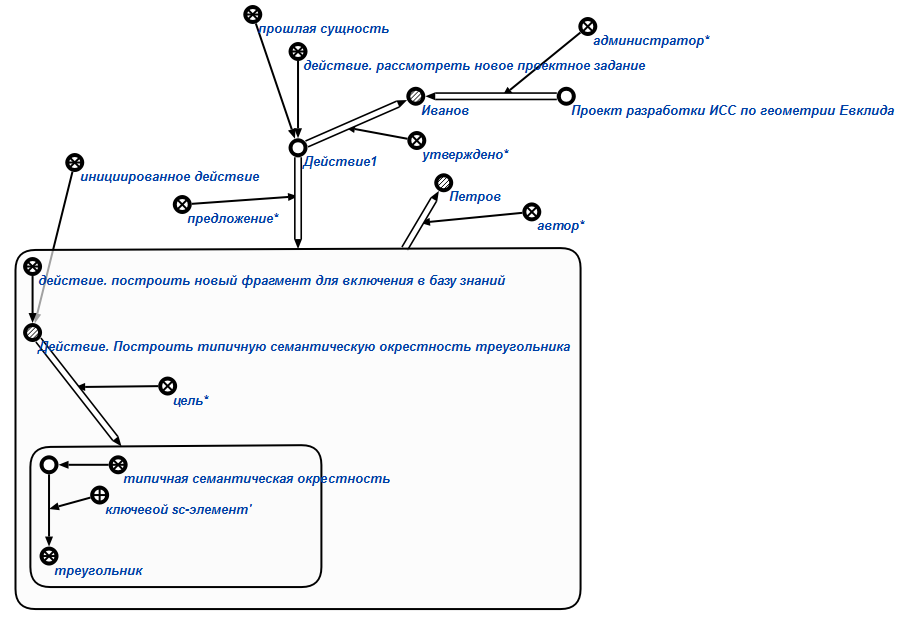

Команда утверждения предложения по редактированию базы знаний предназначена для утверждения* администратором* предложения*, описывающего изменения, вносимые разработчиком* в базу знаний. Единственным аргументом команды является знак действия. рассмотреть предложение по редактированию базы знаний или знак действия. рассмотреть новое проектное задание. Результатом выполнения запроса является утверждение* администратором* фрагмента базы знаний, предлагаемого разработчиком*. Например:
